Slash Cutting The V-Star Stock Pipes
Thanks to Benny Bryant
A Special thanks to Ron Weiser and the Green Mamba
If you're like me, one of the first things you probably wanted to change on your new V-Star is the stock exhaust system. The sound, or noticeable lack thereof, just didn't seem to suit this beautiful bike. For a month or so I messed around with the various mods that were documented on the V-Star related web sites. None of them produced the sound I was after. At some point, I ran across an article written by Benny Bryant on the Shooting Stars Over Alabama Delphi Forum. The article described a radical modification to the stock exhaust system that Benny developed and tested. This modification consists of cutting the end of the muffler off and removing the internal exhaust pipes and baffle plates. Since I had reconciled myself to the fact that I was going to spend $300-$400 on a new exhaust system, I had nothing to lose in hacking away at my stock setup!
What I ended up with was an awesome sounding, great looking set of pipes for about $25. I have had a chance to listen to a few different sets of aftermarket pipes on other V-Stars and the modified stock pipes are second to none. If I ever replace my modified exhaust system it will only be for a change in appearance, not because of the sound!
 The following discussion will hopefully provide a basic understanding of the internal construction of the V-Star 650 exhaust system and the steps necessary to modify the mufflers to get 'that sound' you're after.
The following discussion will hopefully provide a basic understanding of the internal construction of the V-Star 650 exhaust system and the steps necessary to modify the mufflers to get 'that sound' you're after.
NOTE*** If you *like* the sound of the stock exhaust system, or you don't have parental consent to make these and other modifications to your V-Star, you must exit this page now!
First things first; credit for developing and testing this modification goes to Benny Bryant of the Shooting Stars Over Alabama. Photographs, courtesy of Benny Bryant. You can see this and other modifications to V-Stars and other bikes at Benny Bryant's company web site at www.fantasiesonwheels.com Visit the Shooting Stars Over Alabama Delphi Forum for discussions and tips about V-Star modifications. You will find a wealth of information there, along with some great people! For additional information on stock exhaust system modifications along with lots of really helpful pictures, visit the Shooting Stars Over Alabama web page.
The first two diagrams show the 650 and 1100 V-Star mufflers in a, "sort of see through" view. These diagrams are *not* to scale and merely intended to illustrate the construction and internal components of the mufflers. The tags used to describe the components will be referenced throughout this write-up.
 The following diagrams show both a side view and a top view of a muffler that has had the initial slash cut completed. The cut can be at any angle and at any distance from the end of the muffler given the following; If you are *NOT* going to completely gut the muffler, then the angle and distance from the end of the pipe must be such that the second baffle plate *MUST* remain intact. If you want to gut the pipe it doesn't matter where the cut is since all the internal pipes and baffle plates will be removed anyway.
The following diagrams show both a side view and a top view of a muffler that has had the initial slash cut completed. The cut can be at any angle and at any distance from the end of the muffler given the following; If you are *NOT* going to completely gut the muffler, then the angle and distance from the end of the pipe must be such that the second baffle plate *MUST* remain intact. If you want to gut the pipe it doesn't matter where the cut is since all the internal pipes and baffle plates will be removed anyway.
Since I semi-gutted my mufflers I had to locate the position of the second baffle plate. On my mufflers, the second baffle plate was located inches from the front edge of the muffler clamp. I don't know if this varies from muffler to muffler. Since I already had holes drilled through the end cone and first baffle plate, I located the position of the second baffle plate with a stiff wire inserted through the end cone. JUST MAKE SURE YOU HIT THE SECOND BAFFLE PLATE AND DON'T GO THROUGH ONE OF THE BAFFLE REDIRECTION PORTS! Since you can see the second baffle plate after the mufflers are slashed, you want the cut to be back a ways from the baffle plate. I outside slash cut mine at 45 degrees and ended up about 3/4" behind, to the rear of the baffle plate.
The easiest way to make the slash cut is to find a local machine shop and have them do it for you on a horizontal band saw. You can cut them yourself with a hack saw but it's difficult to get a straight and clean cut. The machine shop route should cost around $15-$25.
Locate the position and angle of the cut and mark the cut line on the muffler using a felt tip pen. Wrap the entire cut line with wide masking tape to prevent the chrome from chipping while the initial cut is made, however the chrome does actually hold up very well when the muffler is cut. If going the machine shop route for the cut, I recommend protecting the chrome finish with wide masking tape. This will help to keep the finish from getting scratched while clamped in the band saw. You may also want to take a couple of blocks of soft wood to place in the jaws of the clamp, to further protect the finish.


| 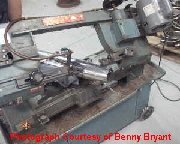 | This picture shows the muffler mounted in a horizontal band saw with the slash cut about half way through the body of the muffler. |
| 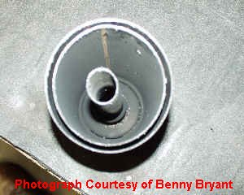 | Here the end of the muffler is shown that has been cut away from the main body of the muffler. This picture shows the Double Body Wall, Final Exhaust Pipe and the First Baffle Plate at the very tip of the muffler. This section is discarded |
| 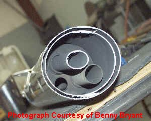 | The view after the muffler has been cut. This shows the Second Baffle Plate, Inner Exhaust Pipe and the Final Exhaust Pipe (the angled pipe that is cut off). This muffler has been 'Down Slashed'. Note the holes in the baffle plate. These holes redirect exhaust gasses from the Final Baffle Chamber into the Inner Baffle Chamber. |
I've never heard the gutted pipes but I understand they sound great! They are probably louder than the semi-gutted version that I did. I would assume that they sound more like aftermarket drag pipes but probably deeper because of the volume of the stock muffler. The greater volume of the stock gutted muffler over a drag pipe, gives the exhaust gasses time to expand. This effectively gives you a deeper more mellow sound than straight 2" drag pipes. 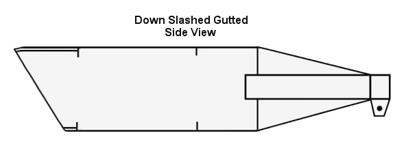 Below is a diagram of what I did. The thought process,... If you stop with just the initial slash cut, you effectively have what's known as a stage 3 muffler mod. With the stage 3 mod, you remove the End Cone and the First Baffle Plate. You then would break the Final Exhaust Pipe out of the Second Baffle Wall. Breaking the Final Exhaust Pipe out at this point is for appearance only. By removing the First Baffle Plate there is *NO* redirection of exhaust gasses,... just straight out the back. For example, Exhaust gasses enter the muffler through the Primary Exhaust Pipe into the Primary Baffle Chamber which doesn't do to much for the sound level. Then the exhaust travels through the Inner Exhaust Pipe, bypassing the Inner Baffle Chamber and out the back of the muffler. In effect what you have is a 1" drag pipe with a little muffling effect at the open back end of the muffler. It's high pitched and 'cracky' sounding.
I was looking for a little less volume than the fully gutted version and better sound than the stage 3 mod, so this is what I decided to do. 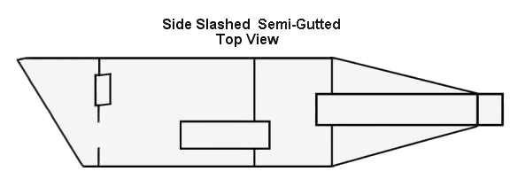 After the initial slash cut was made, I used a Dremel rotary tool to cut the Final Exhaust Pipe off and grind it down flush with the flange on the Second Baffle Plate. Use the fiberglass reinforced cut off wheels to do *all* the cutting and grinding. They cost more but the regular ones don't last at all. A Flex Shaft attachment for the rotary tool makes the job a lot easier because you can get the cut off wheel into much tighter places. In fact, you'll need the flex shaft attachment to cut off the Inner Exhaust Pipe. As the cut off wheels get worn down to about 1" in diameter, remove them from the Dremel and replace them with new ones. You'll need the 1" ones later on to cut off the Inner Exhaust Pipe.
I then cut off the Inner Exhaust Pipe but left about 1/8" sticking out beyond the Second Baffle Plate. You'll need this 1/8" 'lip' on the pipe to grab onto with needle nose vise grips.
I cut off the Inner Exhaust Pipe inside the Inner Baffle Chamber to allow the baffle chamber to be used to tone down the volume and give the exhaust a deeper sound. By cutting the Inner Exhaust Pipe off inside the baffle chamber you effectively are re-using the chamber as an exhaust expansion type baffle. The gasses no longer have a direct path out the back of the muffler but have a chance to expand and make better use of the muffler.
To cut the Inner Exhaust Pipe off inside the baffle chamber use the Dremel Flex Shaft Tool and the 1" worn down cut off wheels. Make sure that the cut off wheel is sufficiently small enough to pass through the pipe. Turn the Dremel on, adjust for moderately high speed and *SLOWLY* insert it into the pipe as far as you can while maintaining control of the tool end with both hands. Try to stay away from the pipe walls until you reach the cut point, then begin to cut the pipe. WEAR GOGGLES OR GLASSES to protect the eyes! Go slow! Once the pipe is cut off all the way around on the inside, grind away or cut the spot welds between the pipe and the Second Baffle Plate. Use the needle nose vise grips on the 1/8" lip and pull the pipe out.
To remove the Double Body Wall I used the Dremel, again, to carefully cut it out around the entire perimeter of the muffler. Leave about a 3/4" width ring of the double wall in the muffler. This 'ring' is spot welded to the Second Baffle Plate in four places and will have to be removed one section at a time since you can't get to the welds to grind or cut them away. Be careful when cutting out the double wall. If you cut into or grind the main muffler wall it will be noticeable when you're done, especially if you paint the inside with aluminum instead of black. 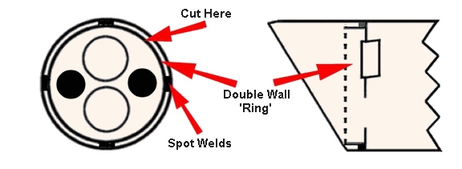 To remove the double wall ring, I first made a very sharp chisel out of an old flat blade screwdriver. I ground the flat blade to a sharp edge with the Dremel tool using the flat side of a cut off wheel. The spot welds holding the wall to the baffle plate are evenly spaced at 90 degree intervals around the perimeter of the ring. The diagram above shows the spot welds but the exact orientation may differ from muffler to muffler. The diagram is for illustration purposes only and is not in scale detail. Notice that the 'Cut Here' mark is located exactly between two of the spot weld positions. Use the chisel, starting on the ring's edge and between two of the spot welds, to cut the ring from the outside edge down to the baffle plate. Cut the ring in four places so that you have four large tabs, each held in place to the baffle plate by the spot weld at the bottom center of each tab. Grab each tab in turn with needle nose vise grips, and wiggle back and forth until the tab breaks off at the spot weld. What you should be left with is four barely noticeable spot welds on the baffle plate. Be careful when cutting the ring with the chisel that you don't cut or gouge the main muffler wall.
You're almost done! I cleaned up the slash cut with a small file and a couple of different grades of emery cloth. Use very fine emery cloth to smooth the main wall edges and to sand smooth and clean the exposed areas inside the muffler. Since I side slashed mine, I painted the baffle plate with high temp black and the exposed main muffler walls with aluminum high temp.
The first time I started up the bike after slashing the pipes, I was very pleased with the sound but it still had a high pitched bark or cracking sound to it. So,... I attached ender washers to the front of the baffle plate, over the holes directly in front of the Inner Exhaust Pipes that I had cut off and removed. I used large toggle bolts behind the baffle plate to hold the fender washers in place. The threads of the screws into the toggle bolts were gooped with high temp RTV to act as thread lock to keep the washers and toggle bolts in place. This made a *big* difference in the sound. The problem was that the exhaust gasses were still blowing out the back, directly through the hole left in the baffle plate after removing the section of Inner Exhaust Pipe, and by plugging the hole, the exhaust has more time to expand before exiting the muffler. This part is strictly a matter of taste. I put the fender washers in after re-installing the exhaust system and checking it out. A little paint on the washers and they disappear,... well almost anyway!
Some have experimented with fine tuning the sound by using additional fender washers on one or both of the 1/2" baffle redirection ports. You MUST leave the final exhaust pipe hole open. If you plug both of the large holes, the pipes will become too restrictive.
| 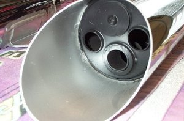 | Finished product. The fender washers and the baffle plates were painted with high temp black and the muffler walls were air brushed with high temp aluminum. |
Harold and Ed didn't cut the inner exhaust pipe off inside the inner baffle chamber as I did. Instead, they cut the inner exhaust pipe off close to the second baffle plate and then plugged the inner exhaust pipe with a 1" automotive freeze plug. Harold spot welded the freeze plug in the inner exhaust pipe, while Ed used Liquid Steel epoxy to anchor the plug. They then used a 12" long, 1/2" diameter drill bit inserted through the holes in the second baffle plate to drill 4, 1/2" holes in the third baffle plate. The long drill bit can be found at Home Depot or the like. Drill at least 4, 1/2" holes in the baffle plate. 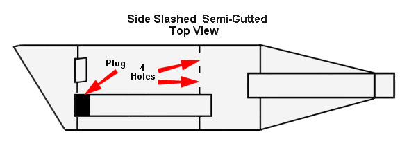 Ed also used Liquid Steel to fill the gap between the Double Body Wall and the main muffler wall. Rather than remove the double wall, he ended up with a 1/8" thick muffler wall at the slash end.
To re-jet or not to re-jet,...that is the question!
If you've already re-jetted for an air box mod such as the RAK, BAK, GAK, Thunder, etc, you won't have to touch a thing. If you are stock and you do the modification as described, you probably will not have to re-jet either. This mod does NOT significantly reduce back pressure through the exhaust. It all depends on if your bike is running on the lean side already. I don't know of ANYONE who has had to re-jet as a result of this mod. The only way to know for sure however, is to monitor closely for the first few hundred miles. CHECK YOUR PLUGS or have the exhaust checked by your mechanic!!
I hope you enjoy the results. I certainly do! It's a little work to do this modification but the results are awesome. I really like both the looks and the sound of the slash cut stock pipes. As a side benefit, my local mechanic (not a Yamaha dealer) told me that the stock exhaust system would last up to three times longer and was much better quality than many aftermarket systems. I don't know if this is true, but it was nice to hear.
If you'd like to see some other rides with slash cut stockers, click on the thumbnail images below. You'll get a pop up window with a larger picture. Just close the window when you're done. The first bike belongs to Lance Brannon, the second belongs to Harold Parsons and the third belongs to Floyd Lawler.
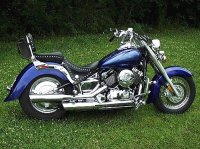 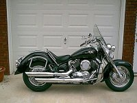 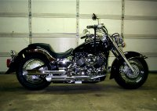 Thanks also go to all those who have designed, tested, provided feedback, enhanced or in any way helped with the development of this modification.
Ron